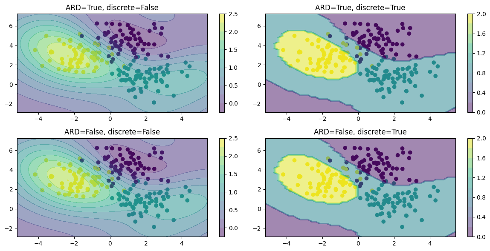
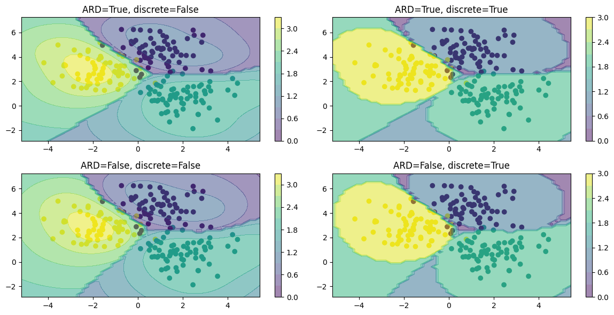
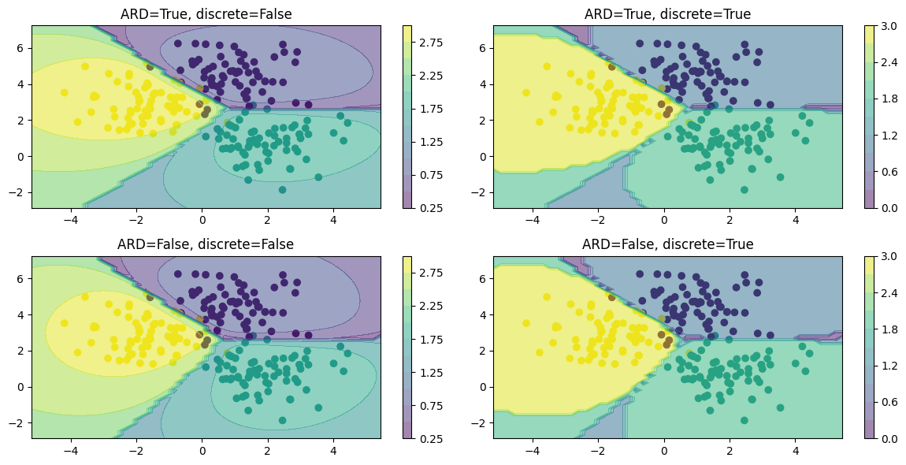

import GPy
import numpy as np
from sklearn.datasets import make_blobs, make_moons, make_circles
from sklearn.metrics import classification_report
from sklearn.preprocessing import OneHotEncoder
from sklearn.model_selection import train_test_split
from sklearn.gaussian_process import GaussianProcessClassifier, kernels
import matplotlib.pyplot as pltCommon functions
def get_kernel(ard):
return GPy.kern.RBF(2, ARD=ard)
def create_and_fit_model(model_class, X, y, ard, **kwargs):
model = model_class(X, y, get_kernel(ard), **kwargs)
model.optimize()
return model
def plot_predictions(predict_fn, ax, fig, discrete=False):
grid1 = np.linspace(X.min(axis=0)[0]-1, X.max(axis=0)[0]+1, 50)
grid2 = np.linspace(X.min(axis=0)[1]-1, X.max(axis=0)[1]+1, 50)
Grid1, Grid2 = np.meshgrid(grid1, grid2)
X_test = np.vstack([Grid1.ravel(), Grid2.ravel()]).T
y_pred = predict_fn(X_test)
if discrete:
y_pred = y_pred.round()
y_pred = y_pred.reshape(Grid1.shape)
ax.scatter(X[:, 0], X[:, 1], c=y)
mappable = ax.contourf(Grid1, Grid2, y_pred, alpha=0.5, levels=10)
fig.colorbar(mappable, ax=ax)Generate Synthetic Data
X, y = make_blobs(n_samples=200, centers=3, random_state=0)
# X, y = make_moons(n_samples=200, noise=0.1, random_state=0)
y = y.reshape(-1, 1)
encoder = OneHotEncoder(sparse=False)
encoder.fit(y)
plt.scatter(X[:, 0], X[:, 1], c=y, s=50, cmap='rainbow');
Train-test split
X_train, X_test, y_train, y_test = train_test_split(X, y, test_size=0.5, random_state=42)
y_train_one_hot = encoder.transform(y_train)
y_test_one_hot = encoder.transform(y_test)Treat it as a regression problem
ard_model = create_and_fit_model(GPy.models.GPRegression, X_train, y_train, ard=True)
non_ard_model = create_and_fit_model(GPy.models.GPRegression, X_train, y_train, ard=False)
fig, ax = plt.subplots(2, 2, figsize=(12, 6))
ax = ax.ravel()
i = 0
for model in [ard_model, non_ard_model]:
for discrete in [False, True]:
predict_fn = lambda x: model.predict(x)[0]
plot_predictions(predict_fn, ax[i], fig, discrete=discrete)
ax[i].set_title(f"ARD={model.kern.ARD}, discrete={discrete}")
i += 1
plt.tight_layout()
Treat it as a multi-output regression problem
ard_model = create_and_fit_model(GPy.models.GPRegression, X_train, y_train_one_hot, ard=True)
non_ard_model = create_and_fit_model(GPy.models.GPRegression, X_train, y_train_one_hot, ard=False)
fig, ax = plt.subplots(2, 2, figsize=(12, 6))
ax = ax.ravel()
i = 0
for model in [ard_model, non_ard_model]:
for discrete in [False, True]:
predict_fn = lambda x: np.max(model.predict(x)[0], axis=1) + np.argmax(model.predict(x)[0], axis=1)
plot_predictions(predict_fn, ax[i], fig, discrete=discrete)
ax[i].set_title(f"ARD={model.kern.ARD}, discrete={discrete}")
i += 1
plt.tight_layout()
Treat it as a One v/s Rest classification problem
ard_kernel = kernels.ConstantKernel() * kernels.RBF(length_scale=[1.0, 1.0])
non_ard_kernel = kernels.ConstantKernel() * kernels.RBF(length_scale=1.0)
ard_model = GaussianProcessClassifier(kernel=ard_kernel)
non_ard_model = GaussianProcessClassifier(kernel=non_ard_kernel)
ard_model.fit(X_train, y_train.ravel())
non_ard_model.fit(X_train, y_train.ravel())
fig, ax = plt.subplots(2, 2, figsize=(12, 6))
ax = ax.ravel()
i = 0
for model in [ard_model, non_ard_model]:
for discrete in [False, True]:
predict_fn = lambda x: np.max(model.predict_proba(x), axis=1) + np.argmax(model.predict_proba(x), axis=1)
plot_predictions(predict_fn, ax[i], fig, discrete=discrete)
ax[i].set_title(f"ARD={bool(len(np.atleast_1d(model.kernel.k2.length_scale))-1)}, discrete={discrete}")
i += 1
plt.tight_layout()